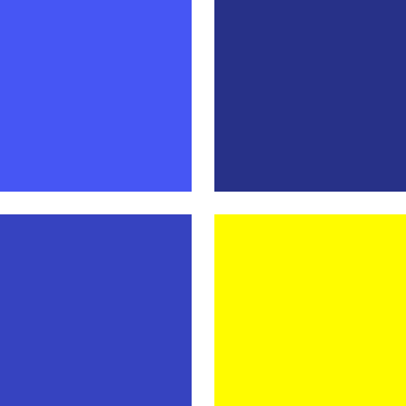

Main Menu
Options
Previous Page
Inventory
By Murdo Macgregor | 40438627
Options
Colour styling: Use these buttons to customize the appearance of the game to better suit your requirements.

Change style to Detour
Change style to Black and White
Return To Game